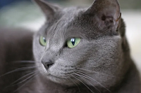

Resulta bastante fácil reconocer a un gato ruso azul: se trata de una raza mediana, de porte elegante y estilizado, con un pelaje corto en tonalidades de gris o plateado, que a veces puede mostrar una “sombra” azulada, y grandes orejas. Esta raza felina se hizo popular por su apariencia particular y también por su carácter afectuoso y muy juguetón. Además, suele soltar poco pelo y requiere cuidados simples con su cepillado, lo que facilita el mantenimiento de su pelaje. En la actualidad, es muy común ver a un ruso azul entre los animales de compañía preferidos por familias con niños.
Las razas de gatos grises son muchas, cada una con características, comportamientos y personalidades diferentes, pero con un rasgo en común: su belleza.
Estas tonalidades se destacan por darle a los felinos una apariencia elegante y un estilo fino.

FIN